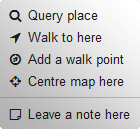

Bexhill OpenStreetMap
Find an interest:
Welcome!
Bexhill-OSM is a non-commercial, community based project. It aims to help people find and gather information on places in Bexhill-on-Sea, UK.
- To get started:
- Enter a keyword above to see a group of interests.
- Look up an address by using the () button.
- Middle-click / long-press a place on the map to view its details.

Note: areas to the west are work-in-progress.
View Help [] for more assistance.
If you have any questions or wish to help out, contact details can be found under Information [].
Bexhill-OSM v1.5.0 © 2016
Help
Map Controls
Context-menu
Find Interest
Tabs
Points of Interest (POI)
Walking Routes
View demonstration videos
Map Controls
The zoom controls ( / ) will enlarge and shrink the map.Your current position can be located if you are in Bexhill by clicking the arrow icon ().
Find an address on the map by entering part of it into the search box (). A selection will appear if multiple results are found.
If you wish to share your current view and selected options, click the link icon () and copy the text displayed.
To clear all current layers on the map, click the bin (). Right-click / long press will reload the website to defaults.
Various styles of base map can be displayed using the overlay picker - located at the top-right of the page.

Context-menu
Anywhere on the map, right-click (desktop) or long-press (mobile).Lookup: Display information on an item under the cursor, only works on higher zoom levels. Middle-clicking the scroll-wheel is equivalent.
Start / End walk: Plot markers to create a walking route.
Improve map: Open openstreetmap.org where you can leave a note or edit the map.

Find Interest
Type the first few letters of a keyword (e.g. 'police', 'bike', 'diy'). Click the word in the category you are interested in to display it on the map.To see only currently open facilities, check the box beneath.

Tabs
[] Shops: Buildings where general items are sold.[] Amenities: Where to find a meal or a cup of coffee. Social facilities, transport, recycling.
[] Services: Public and private offices and services.
[] Leisure & Tourism: Where to stay, go, socialise and discover Bexhill's historical places.
[] Walking Routes: Select from a few local walks, or create your own path through the many twittens (see below for more info).
Points of Interest (POI)
To begin displaying a POI, zoom to an area on the map and click an item - up to 3 POIs can selected at once. After a few seconds corresponding items will be displayed on the map as icons. Larger map areas may take longer to load.
By clicking you can edit the item on openstreetmap.org.

Walking Routes
Find a route by either entering an address, or using the map context-menu. Add additional markers by dragging an existing path to a new location.
Information
About & Contact
Links
Donate
Software
About & Contact
OpenStreetMap (OSM) is a free, collaborative project to create an editable map of the world. Bexhill-OSM is an unofficial site that presents data that has been added by volunteers in Bexhill-on-Sea.
Both this website and the underlying area on OpenStreetMap are managed by Alexis Markwick.
If you have any enquiries I can be reached via:
info@bexhill-osm.org.uk
facebook.com/bexhillosm
Links
OpenStreetMap
- The map anyone can edit!
OsmAnd
- Offline mobile maps and navigation.
F4Map
- Dynamic 3D map of Bexhill.
Discover Bexhill-on-Sea
- Local visitor and tourist guide.
Bexhill Online
- Bexhill's Community Newspaper.
Bexhill Town Team
- News and events around the town centre.
The Old Town Preservation Society
- Maps and information from past to present.
The Bexhill History Trail
- A guide to many of the historic gems.
Discover East Sussex
- Leisure and tourist guide for East Sussex.
Donate
Bexhill-OSM is entirely advertisement and commercial free. If you found it useful, or just wish to say thanks - click below. Any amount is appreciated!
Flattr:
Software
Source-code for Bexhill-OSM can be downloaded from GitHub, as well as a change-log of continuing web developments.
To see my recent map changes click here.
Special thanks to the developers below, for without them this website would not be where it is today:
- osm-pois (founding project) © Manuel Kaufmann
- Leaflet © Vladimir Agafonkin
- Leaflet Plugins:
- sidebar-v2 © Tobias Bieniek
- Leaflet.contextmenu © Adam Ratcliffe
- Leaflet.loading © Eric Brelsford
- Leaflet.EasyButton © Daniel Montague
- leaflet-control-geocoder © Per Liedman
- leaflet-routing-machine © Per Liedman
- leaflet-locatecontrol © Dominik Moritz
- leaflet-layer-overpass © Karsten Hinz
- leaflet-hash © Michael Lawrence Evans
- Font-Awesome © Dave Gandy
- Map Icons Collection © Nicolas Mollet
- jQuery © The jQuery Foundation
- image-map-resizer © David J. Bradshaw
- opening_hours.js © Robin Schneider
- EasyAutocomplete © Lukasz Pawelczak
- URI.js © Medialize
- Mustache © Jan Lehnardt
- Mapbox Directions API © Mapbox
- Favicon Generator © Philippe Bernard